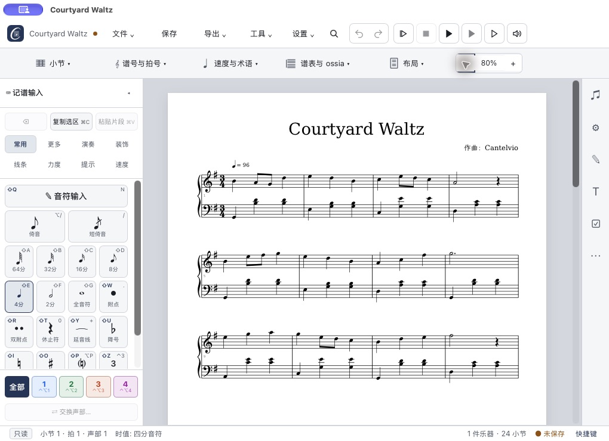
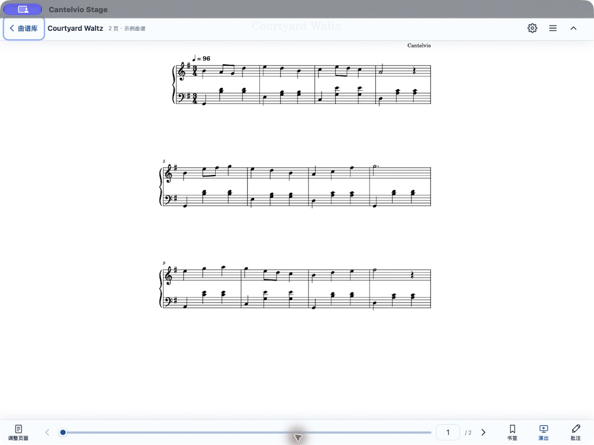

MADE FOR MUSIC
From score
to performance.
Turn an idea into a score, bring it to your music stand, and make it part of your next performance.
Two apps, one musical journey


MEET CANTELVIO
Let the music
carry on.
Whether you are shaping a melody or preparing for a performance, Cantelvio connects the music you create with the music you play.
CANTELVIO SCORE MUSIC NOTATION EDITOR
Put your ideas
on the page.
Start with a melody and shape it into a score of your own. Edit, listen and refine, then save or share your work.
Create a score or open a MusicXML file, then add notes, rests and notation.
Play your score with built-in sounds, then return to the page to edit and adjust the layout.
Save an editable score or export PDF, SVG and MIDI files.
For iPad and Mac
Mac interface shown in Chinese · Score: Courtyard Waltz
QUICK START
Get started with Score
Begin with a simple score, even on your first visit.
- 01
Create or open
Choose “New score”, or open an existing editable score or MusicXML file.
- 02
Enter and edit
Choose a note duration and enter notes on the staff. Add rests, dynamics and other notation.
- 03
Listen back
Press play to hear your score, then return to the page and make any changes you need.
- 04
Save or export
Save an editable .cantel file, or use the export menu to create a PDF, SVG or MIDI file.
Mac interface shown in Chinese · Score: Courtyard Waltz
CANTELVIO STAGE YOUR MUSIC STAND
Every page,
ready to play.
Read and play native Score files, organise your PDFs, and bring your music to the stage.
Import a .cantel file or share it from Score, then read and play it directly.
Connect a folder on your device or in iCloud to browse PDFs and editions.
Mark up your music, turn pages, and use a Bluetooth pedal or performance mode.
For iPhone and iPad
Organise a library with an agentQUICK START
Get started with Stage
Try the included sample, then bring your own music.
- 01
Open a score
Open the sample, a PDF, or a native .cantel file from Score.
- 02
Turn and browse
Tap near the sides or swipe to turn pages. Tap the centre to show the reading tools.
- 03
Add annotations
Open “Annotate” and write with your finger or Apple Pencil. Finish when you are done.
- 04
Get ready to perform
Choose “Performance” in the toolbar. Tap the centre again to find the exit control.
YOUR LIBRARY, YOUR WAY
Let an agent organise your music.
Ask an AI agent with file access to organise your PDFs by composer and work. Then choose the folder in Stage’s “Library”.
Back up your scores, catalogue and annotations first. The agent is a separate tool.
See and copy the detailed prompt
Replace the bracketed locations, then send this to an agent with file access.
Please help me create a score library for Cantelvio Stage. Source folder: [path]; new library location: [path]. Inventory the files and propose a plan first. Do not move, overwrite or delete originals without my approval. If a Stage library already exists, back up the entire library, including its data and annotations, and work on a copy. 1. Inventory PDFs and nearby MIDI files; calculate each PDF’s full SHA-256. Register identical content once while retaining all original files and source names. Do not merge different editions with different content. 2. Propose a “shelf / subsection / work / edition.pdf” structure. Use short, unambiguous common names for classical shelves, such as “肖邦” (Chopin), “巴赫” (Bach) and “贝多芬” (Beethoven); use series names for game shelves. If a short name is ambiguous, use enough of the name to distinguish it or flag it for review. Keep the standard full name in the catalog composer field so Stage can classify correctly: “弗雷德里克·肖邦”, “约翰·塞巴斯蒂安·巴赫”, and “路德维希·范·贝多芬”, respectively. Use genre or region for subsections. For Chopin, group waltzes and polonaises under “舞曲”, études under “练习曲与复调”, and nocturnes under “抒情小品”. Keep editions of a work in one work folder with related MIDI files. Name each PDF “edition · first 8 hash characters.pdf”, or use the work name when the edition is unknown. Retain catalogue numbers, keys, movements and important subtitles; do not merge distinct works with similar names. 3. Use filenames, existing records and score pages to identify title, composer, edition, arranger, style, era and region where applicable (for example, use region for Liyue in a Genshin collection). Record musical style separately from the folder subsection. Distinguish a composer from a series name and use one consistent name per composer. For Genshin works, use “原神 - work title” as title, an evidenced real composer as composer, and put a region in region only when it is explicitly stated in the supplied catalogue or corresponding file; cite the exact source and wording in the report. If no such direct evidence exists, leave it blank and use “地区待核对”, even if you believe you know it. Unify composer names in different languages only when the supplied material explicitly establishes their equivalence; otherwise preserve the original credit and flag it for review. Do not guess. Show me the proposed classifications and renames, then copy to the new library only after approval. 4. Place both files inside the library root’s “曲谱库数据” folder, at exactly “曲谱库数据/catalog.json” and “曲谱库数据/manifest.json”. Use version: 1, localLibrary: true and an items array at the catalog top level; use version: 1 and a files object at the manifest top level. Give each PDF one record with its full SHA-256 as id and sourceId. Include title, composer, edition (if known), arranger (if known), style, era, region (where applicable), libraryFolder (shelf name), format: “pdf”, available: true, bytes and aliases; map the full SHA-256 to the PDF’s path relative to the library root in manifest.files. Use the same title and composer for editions of one work, and put edition differences in edition. Put the new relative path first in aliases, keep the original name, and set libraryFolder to the short shelf folder name. Use short names in the organisation report and preview too, with a separate mapping to standard full names. Do not invent missing details. Preserve other existing catalogue fields, records and annotations; do not overwrite an existing library with a fresh index. 5. Use consistent names: use the same title for versions of a work and retain catalogue numbers, keys and movements stated in the source, without adding missing details from memory. Merge only when the same work, movement and phase are confirmed. If one score specifies a phase, movement or number and the other does not, keep them separate and flag for review. Derive edition only from the original filename; do not add instrumentation, publisher or arranger found only on the score. Use only parenthesised edition information, an explicit “- 总谱” suffix, an “_simple” marker, or explicitly named publisher and editor information: use the parenthesised text, “总谱”, or “简化版”, or record the publisher and editor in the source order; for example, “Peters_Czerny” becomes “Peters · Czerny”. If none is explicitly present, omit edition; do not use the work title as an edition. Normalise “·” inside parentheses to “ · ” and preserve arranger text in the form “编曲：name”. Keep labels in their original order and add no other words. If the filename and score disagree, set edition to exactly “版本待核对”, with no extra labels; record score-identified arrangers separately in arranger and explain the evidence. For identical files, choose an original name containing edition information; if there are several, use the first by filename sort, while preserving all names. 6. Check every path and hash, duplicates, work and edition groupings, shelves and subsections. Stage derives some groupings from titles and metadata, so the folder structure alone does not guarantee how every subsection will display. Report uncertainties and tell me which root folder to choose in Stage’s “Library”; remind me to spot-check scores, editions and MIDI in Stage.
BETTER TOGETHER
From the page
to the stage.
When your score is ready, send it from Score to Stage. Read and play it without first converting it to PDF.
See how it works In ScoreChoose “Export → Read in Stage”
In ScoreChoose “Export → Read in Stage”To make further edits, return to the original score in Score. Share it again to bring the updated version to Stage.
MAKE ROOM FOR MUSIC
Your next piece
starts here.
Choose the tool that fits your music and let the next idea take shape.